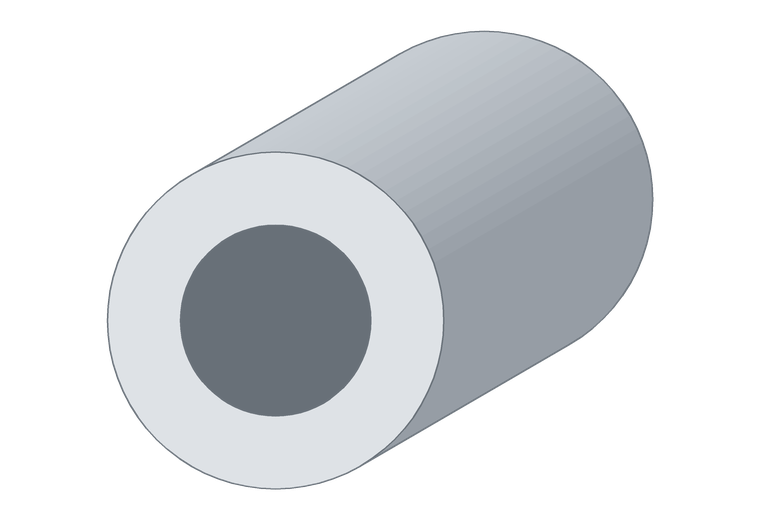

Caño aletado de aluminio Ø26,5 / Ø15 mm
Caños con aletas para disipación de calor: iluminación LED, electrónica de potencia y refrigeración.

Caño aletado de aluminio Ø26,5 / Ø15 mm
- Ø sobre aletas
- 26,5 mm
- Ø interior
- 15 mm
- Largos
- 6 m
- Aleación
- 6063
¿Necesitás esta medida cortada a un largo puntual? Trabajamos con siete extrusores: si existe en el país, lo conseguimos.
Cortamos a medida y entregamos en todo el país.